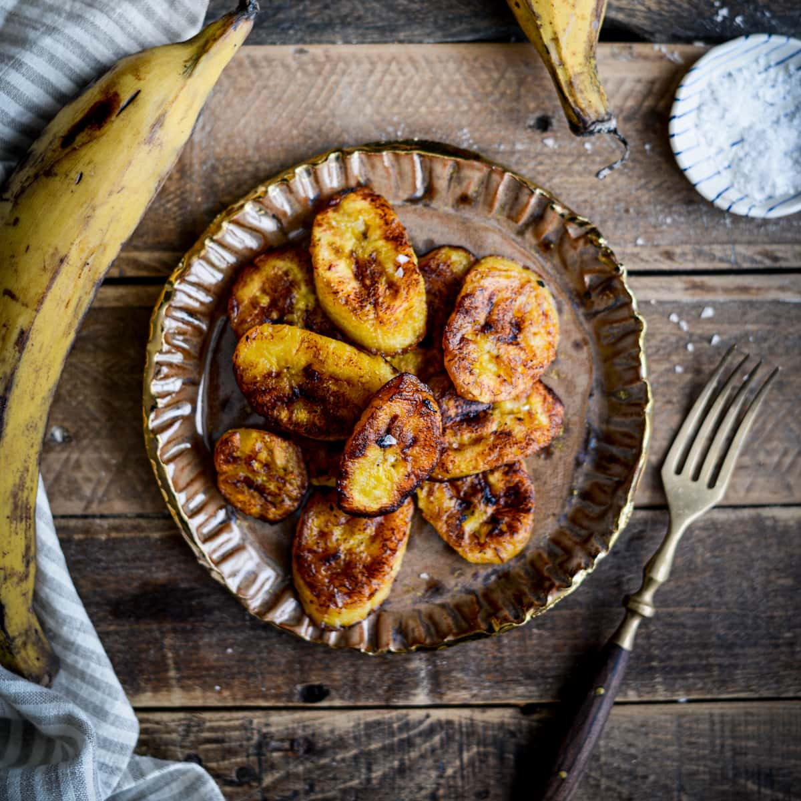

FRIED PLANTAIN

DESCRIPTION
fried plantains, also known as "dodo" or "boli", are a popular side dish in West African countries.
They are made from ripe plantains that are deep-fried until crispy and golden brown on the outside and soft and sweet on the inside.
INGREDIENT
- Ripe plantains
- Vegetable oil
- Salt
- Optional: other spices or seasonings, such as cumin, paprika, or garlic powder
STEPS
- Choose ripe plantains that are yellow with some black spots. Peel the plantains and cut them diagonally into thick slices.
- Heat vegetable oil in a frying pan or deep fryer over medium heat until hot.
- Add the plantain slices to the hot oil and fry them for about 2-3 minutes on each side or until they are golden brown and crispy.
- Once the plantains are fully cooked, remove them from the oil and drain them on a paper towel-lined plate to remove any excess oil.
- Season the fried plantains with a sprinkle of salt and any other desired seasonings, such as cumin or paprika.